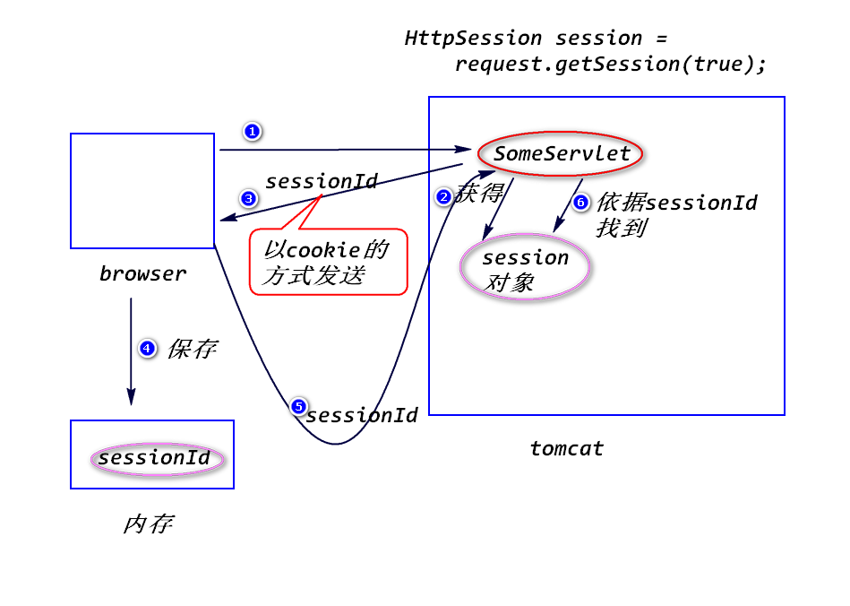

a.cookie可以被用户禁止。
b.cookie不安全。
对于敏感数据，尽量避免存放在cookie里面，如果一定要存放，
要加密之后再存放。
c.cookie只能存放少量的数据。
大约是4k左右
d.cookie个数也有限制。
大约几百个
e.cookie只能存放字符串。
服务器端为了保存用户状态而创建的一个特殊的对象。
当浏览器访问服务器时,服务器创建session对象(该对象有一个唯一的
id,一般称之为sessionId),服务器会将sessionId以cookie的方式
发送给浏览器。
当浏览器再次访问服务器时，会将sessionId发送过来，服务器依据sessionId找到对应的session对象。
HttpSession session = request.getSession(boolean flag);
注:
HttpSession是一个接口,session对象是一个符合该接口的对象。
当flag为true时，先查看请求当中有没有sessionId,如果没有,
则创建一个session对象；如果有sessionId,则依据该sessionId
查找对应的session对象,如果找到了，则返回该session对象,如果
找不到，则创建一个新的session对象。
当flag为false时，先查看请求当中有没有sessionId,如果没有，
返回null。如果有sessionId,则依据该sessionId
查找对应的session对象,如果找到了，则返回该session对象，如果
找不到，返回null。

HttpSession session = request.getSession();
等价于 request.getSession(true)。
setAttribute(String name,Object obj);
Object getAttribute(String name);
注：如果绑订名对应的值不存在，返回null。
removeAttribute(String name);
String getId();
a.什么是session超时?
服务器会将空闲时间过长的session对象删除掉。
注：
服务器缺省的超时时间长度一般是30分钟。
b.如何修改超时间时间长度?
方式一 修改web.xml文件中的配置
<session-config>
<session-timeout>30</session-timeout>
</session-config>
方式二 setMaxInactiveInterval(int seconds)
二次请求之间的最大间隔
session.invalidate();
step1.在登录成功之后，绑订一些数据到session对象上。比如:
session.setAttribute("user",user);
step2.当用户访问需要保护的资源时(即只有登录成功之后才能访问的资源，比如，访问success.jsp),进行session验证:
Object user = session.getAttribute("user");
if(user == null){
//没有登录
response.sendRedirect("login.jsp");
}
session相对于cookie,优点是更安全、能存放更多的数据、
支持更丰富的数据类型，但是，session会占用服务器端的内存
空间，如果用户量很大，会占用大量的内存空间。
指的是链接、表单提交、重定向和转发时，如何填写路径。
<a href="">
<form action="">
response.sendRedirect("")
request.getRequestDispatcher("")
不以"/"开头的路径。
以"/"开头的路径。
链接、表单提交、重定向从应用名开始写，转发从应用名之后开始写。
注：一定不要将应用名直接写在路径里面，要使用
request.getContextPath方法来获得实际部署时的应用名。